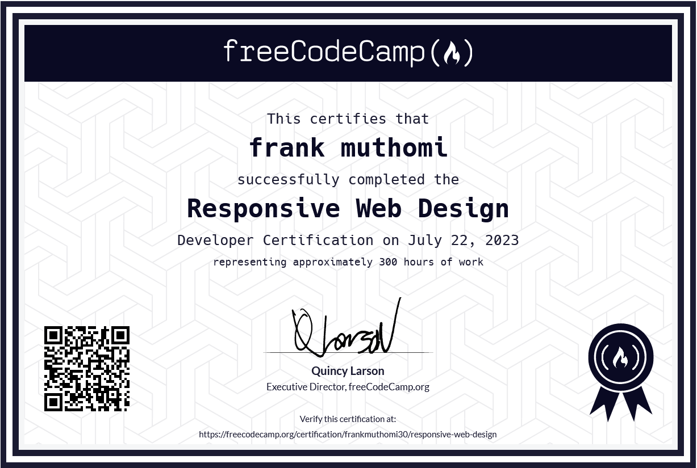
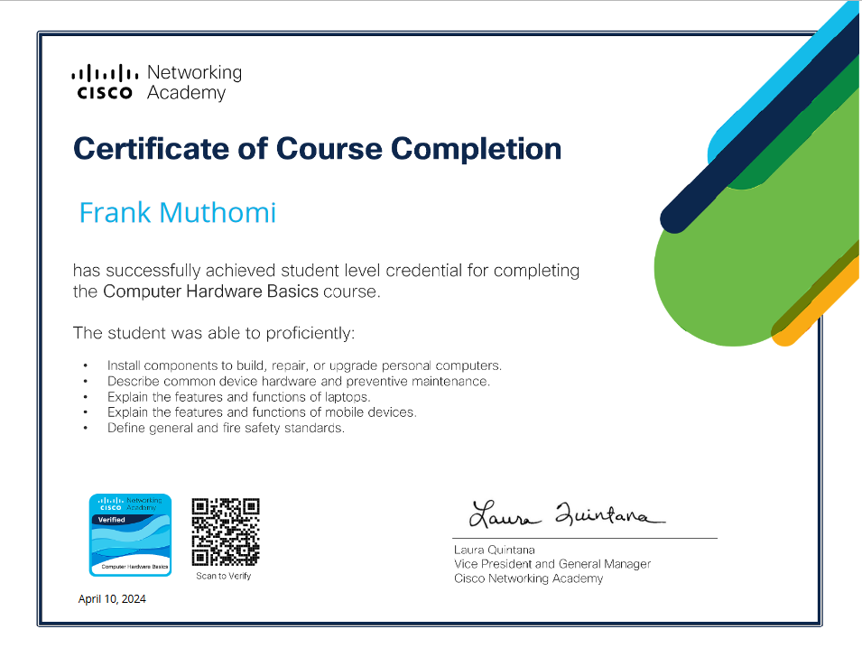

Aspiring ICT Professional | Software Developer | Data Analyst
Results-driven ICT professional with a strong foundation in software development, data analysis, and system management. Demonstrated ability to leverage technical skills to drive operational efficiency and contribute to innovative projects. Seeking to apply expertise in a dynamic environment to deliver value-driven solutions and foster technological advancement.
Nov 8, 2022 - Nov 10, 2022
Jan 10, 2022 - Mar 31, 2022
April 10, 2024 - May 14, 2024
Nyeri National Polytechnic | 2021 - 2023
Mathakwa-ini Secondary School | 2016 - 2019
Score: C (Plain)
July 2023
Completed 300 hours of coursework, demonstrating proficiency in modern web design techniques
Cisco Networking Academy
